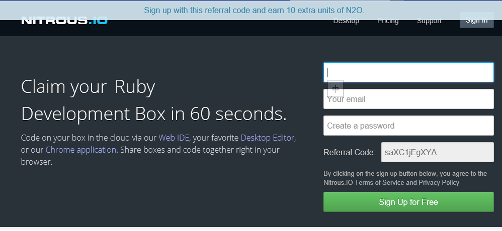
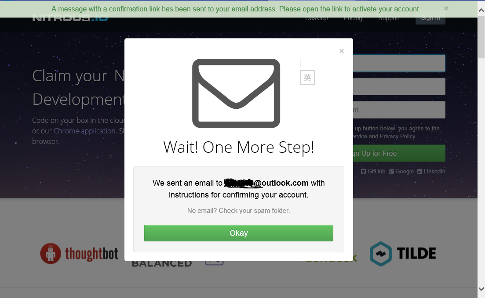
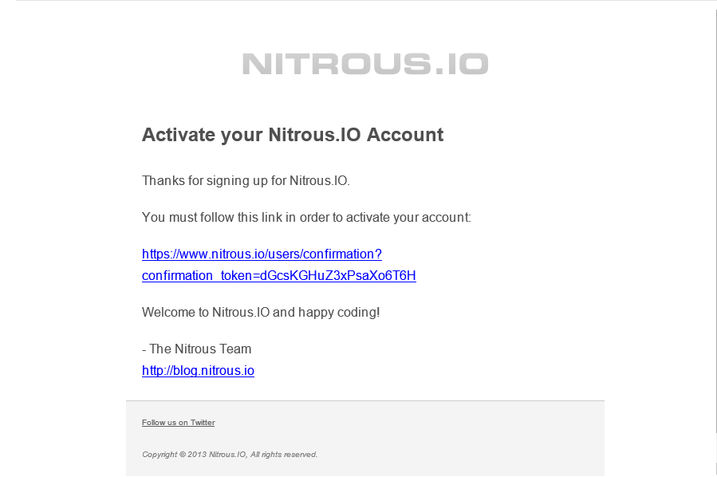
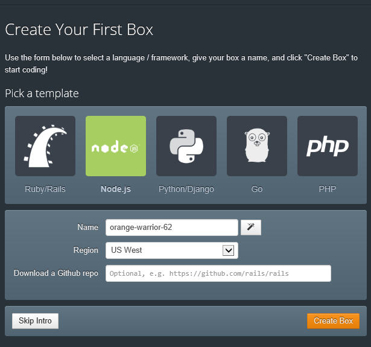
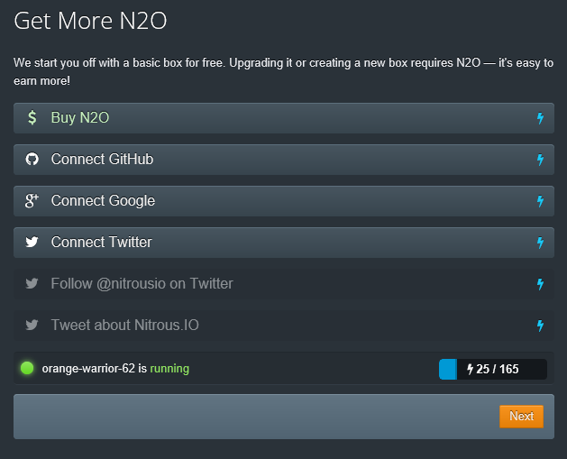
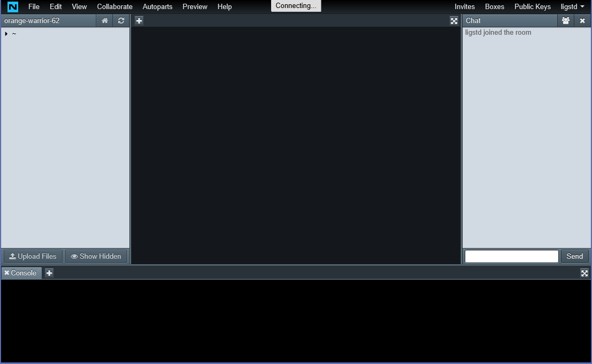
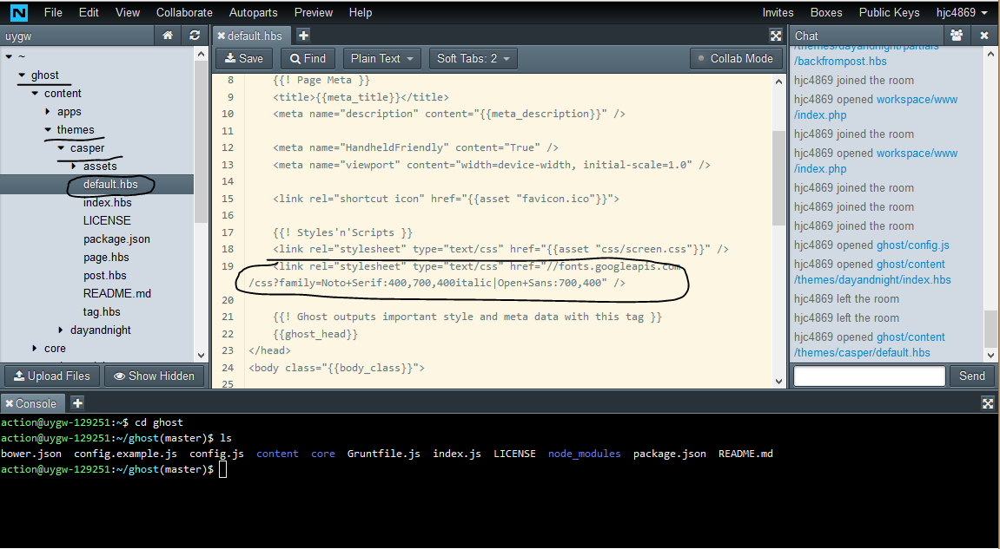

建站示例：http://www.uygw.ga/ 长期有效。
折腾Ghost博客是个人喜好之一，虽说现在把blog各方面（皮肤，核心）改得自己还算满意，而且有了一年都不down的Linode作为主机，但还是想折腾出一套免费搭建完美的Ghost博客的教程。毕竟用Linode只建一个Ghost也太浪费了，即便是10刀的plan，跑10个Ghost博客都不嫌多。Ghost完全可以用免费的OpenShift来搭建，如果只搭博客，最多也只会用到$5/mo的DigitalOcean，甚至都可以几个人合租。
本文主要讲怎样使用Nitrous.IO和OpenShift快速并免费地搭建一个Ghost博客，安装并编辑主题，并实现在国内基本正常的访问。之所以使用Nitrous.IO，是因为它提供了一个配置好的Linux环境，并且有在线编辑的功能。
放眼一看国内搭建Ghost博客的教程抄来抄去就那几篇，而由于OpenShift的问题，Ghost博客的在线一键安装已经失效了，因此不得不手动搭建。国内的教程还会教你用putty，生成公钥私钥（麻烦死），上传公钥之类的。但有了Nitrous.IO这个环境，这一切都很方便。你只需要多注册一个服务即可，而所有操作都在网页上进行，你不需要在电脑上安装任何程序。
需要注意的是Ghost博客仍然不像WordPress那样成熟，因此对于初学者来说搭建可能比较麻烦。
你需要准备：
1.域名*1 顶级域名二级域名都行，但没有的话就不能让国内用户正常使用了。
2.国外邮箱*1 推荐Outlook，或者说Gmail也行（访问可能不通畅），也可以给自己的域名申请一个企业邮箱，比如免费的Zoho。
3.翻q工具（可选） 不一定是VPN，只要能让你的IP变到国外就行。据说OpenShift给国内用户分配的服务器比国外用户更加拥挤，不知是不是真的。
4.基本的英语水平 如果你认得谷歌翻译的结果也行，总之要能看得懂网站内容。
5.“现代”浏览器 Firefox或者Chromium最新版，推荐Firefox。（虽然我很无奈，但是还是得说，Nitrous.IO最近的更新让IE10+不能使用在线IDE编辑功能了，跟他们的客服反映，他们让我用Chrome或Firefox。本来IE完全可以搞定的。）
注意：从这里开始，就可以全程挂上翻q工具了。
1.注册账号
你需要以下几个地方的账号：
Nitrous.IO
这一步请使用Firefox或Chrome完成
不介意的话可以用我给的邀请链接，你会多得到一些配额，我会得到一点奖励。直接注册

步骤很简单，填写想要的用户名，邮箱和密码，点击“Sign Up for Free”，看到如下画面后去邮箱里确认即可。

邮件内容如下图

点击链接之后，会出现登录框，使用刚刚注册的用户名登录即可。登录后点击
会出现以下页面

这里你需要创建一个Box，template选Node.js，名称任意，Region建议选择US West，Download a Github repo空着不填，如果用我的邀请链接注册，之后可以把磁盘容量略微调大一些。
Create Box后会让你绑定其它账号，为了节约时间这一步可以跳过去。

直接Next即可。下一页点击Take me to my Box!就进入了在线IDE界面。如果不挂翻q工具，这一步可能会卡在Connectiong上。

至此Nitrous.IO账号准备完成。这个IDE将成为以后编辑主题、Ghost博客的场所，以及使用OpenShift命令行rhc工具的地方。
OpenShift
注册地址
与上述步骤基本相同，就不截图了。OpenShift只需要注册+验证邮箱+接受服务协议，其它的任何操作都不需要进行。
2.在Nitrous上安装并使用rhc工具
回到刚刚的Nitrous.IO IDE，在Console里面输入命令gem install rhc
输入rhc setup，你需要输入一系列信息
Enter the server hostname直接回车
Login to openshift.redhat.com输入注册openshift服务的邮箱
Password输入密码
Generate a Token now回答yes
Upload Now?回答yes
Please enter a namespace随意填写一个（唯一）namespace，只能是数字和字母
Provide a name for this key直接回车即可
这样一来rhc工具就安装完成了。
3.创建Ghost应用并绑定域名
在第二步的命令行中继续输入命令（有些长，这是一行命令）
rhc app create ghost[你想要的应用名，建议ghost，为了方便，本文中都使用ghost代替] nodejs-0.10 mysql-5.1 --env NODE_ENV=production --from-code https://github.com/openshift-quickstart/openshift-ghost-quickstart.git
注意：Nitrous的命令行粘贴是Ctrl+Shift+V。
稍等一会儿（要个几分钟吧）会问你：
Are you sure you want to continue connecting (yes/no)
回答yes即可。然后会告诉你成功创建。并且你的网址是http://[应用名]-[namespace名].rhcloud.com/，这样一来，就可以直接通过网址访问Ghost博客了。
接下来绑定域名。输入命令rhc alias add [你的应用名] [你自己的域名]，看到Alias '[你自己的域名]' has been added.时就已经成功了。这是你只需要将域名对应的记录CNAME到http://[应用名]-[namespace名].rhcloud.com/（默认网址）即可。等待生效后就能通过自己的域名访问Ghost博客了。至于Ghost博客的使用这里就不多描述了。
4.CDN
上述过程已经搭建了一个q外可以正常访问的网站了。但是这个时候细心的你肯定发现国内很多地方无法访问。现在你需要的就是Incapsula或者Cloudflare。前者免费50GB流量，后者无限流量但必须把整个域名都交给它，并且后者有些IP已经被q，如果不幸“中奖”就不好了。CDN选取上就不多作说明了，网上很多相关教程，推荐看这个 www.freehao123.com/cloudflare-cdn 。
如果感觉Cloudflare的DNS慢，可以试试DNSPod解析+Incapsula加速，这样是最快的。
同时还有一个有国内节点的免备案CDN叫YEPCDN可以尝试一下，个人没用过所以不做推荐。
5.DIY
看到这儿你可能想问我，花这么大劲去注册Nitrous.IO干什么，不会只是为了个Linux环境吧？答案显然是No!接下来就试着用Nitrous.IO来做点有用的事情。
1.删除或替换前台谷歌字体，加快国内访问速度。
打开Nitrous.IO，找到如图所示的文件（~/你的应用名/content/themes/casper[或你的主题名]/default.hbs），去掉圈起来的内容，再按Ctrl+S保存。

如果你使用了第三方主题，那么就把casper换成对应的主题文件夹。
注意：这样只是删除了前台的google字体，后台仍然存在，不过后台略慢一些不太影响，如果一定要去除需要删掉ghost/core/server/views/default.hbs里面的<link rel="stylesheet" type="text/css" href="//fonts.googleapis.com/css?family=Open+Sans:400,300,700" />和ghost/core/server/views/user-error.hbs里的相同内容。
接下来更新应用
进入命令行，输入命令
cd ~/ghost[你的app名]
git add . 【这一个点(.)千万别掉了，而且和add之间有一个空格】
git commit -m "google fonts removed[随便输入什么内容]"
git push
等待出现remote: Deployment completed with status: success的时候就是成功了。
2.安装主题
Ghost主题安装分为两种：直接下载和git clone。前者只需wget下载到ghost/content/themes/[文件夹名]/ 内并unzip/tar解压，后者是cd ~/ghost/content/themes/，git clone [git地址]。注意这样是将主题安装到nitrous的box内，还需要更新应用（过程与修改谷歌字体中更新应用相同）
6.小提示
1.千万不要用免费tk域名，它迟早有一天会坑你（直接删你域名之类的），让你好不容易得到的搜索引擎排名瞬间消失。（本来tk就不容易被收录）域名不贵，也不难买，支持支付宝的GoDaddy，经常有优惠。
2.OpenShift可以验证信用卡（不扣钱）但不用付费服务，验证之后你创建app的宿主机质量会变好！并且你可以使用SSL证书（StartSSL免费证书也行）
3.Nitrous.IO连续几个月不登录可能会删掉Box（会提前很久邮件提醒你，但你没看到就惨了），因此不要保存任何重要数据。
4.OpenShift的免费平台还是很靠谱的，短时间内应该不会停止，因此可以作为长期使用的平台。